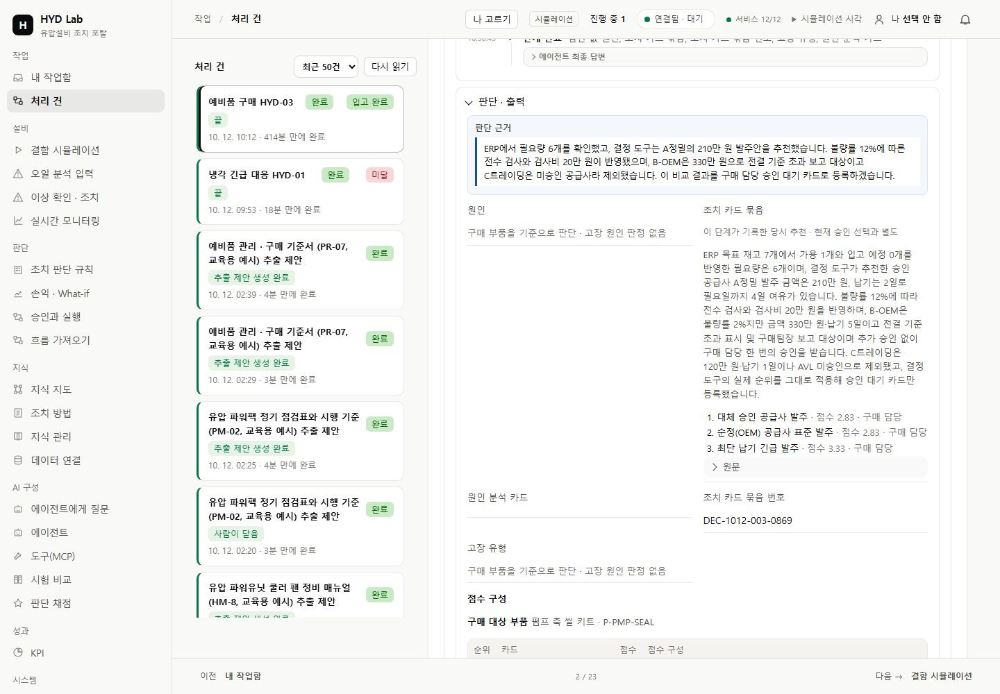
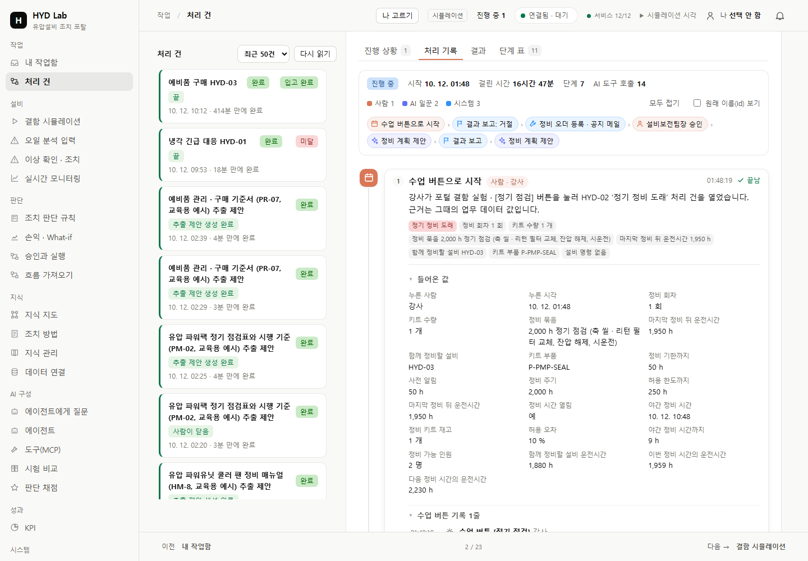

Dify 실행 기록 참고 — 원본 유지
보존한 공식 문서 화면입니다. 업무 데이터와 화면 폭이 다르므로 기록·상태·근거의 위계를 비교합니다. 참고 출처·원본 SHA

왼쪽은 보존한 참고 원본, 오른쪽은 기존 처리 건을 읽기만 한 후속 실제 화면입니다. 참고 화면과 업무·폭이 다른 부분을 표시했습니다. 사용자 시각 승인이나 전체 앱의 픽셀 일치를 주장하지 않습니다.
보존한 공식 문서 화면입니다. 업무 데이터와 화면 폭이 다르므로 기록·상태·근거의 위계를 비교합니다. 참고 출처·원본 SHA
기존 C 처리 건의 실제 1440px 화면입니다. 저장 원문을 자동으로 읽고 길이·SHA·잘림을 확인한 뒤 당시 구매 평가·제출 결과를 표시합니다. 현재 OEM 승인으로 과거 추천을 바꾸지 않습니다. 1024px · 실제 96항목 검사

공식 문서에 보존한 실행 기록 화면. 출처·원본 SHA는 참고 원본 기록입니다.
실제 1440px. 구매 부품·후보·당시 추천을 현재 승인과 구분합니다. 1024px

보존 소스로 컴파일한 폼·도구 컴포넌트이며 전체 앱 실행 화면은 아닙니다. 출처·최신 원격 차이는 이전 참고 조사에 있습니다.

실제 1440px. 긴 입력을 모두 읽을 수 있도록 줄바꿈했습니다. 두 화면의 기능 종류가 다르므로 카드·값·상태의 위계를 비교합니다. 1024px
